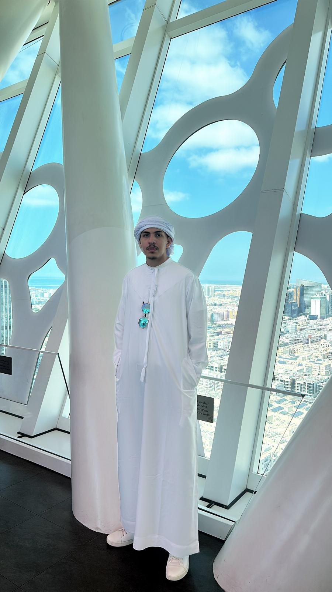

פרטים אישיים

סטודנט למערכות מידע B.Sc, בעל ידע בתכנות SQL server ,Data Structure,Java,Python,OOP, HTML, CSS, בניית מערכות מידע ופרויקטים אקדמיים.
כישורים טכניים
- תכנות מונחה עצמים (Java)
- בניית אתרים – HTML & CSS
- בסיסי נתונים (SQL)
- רשתות מחשבים
- מבני נתונים
- מסדי נתונים
- אפיון ותכן מערכות מידע
- פייתון
- חדו״א
- סטטיסטיקה
- אלגברה לינארית
השכלה
- 2024–2026: תואר ראשון מערכות מידע – המכללה האקדמית עמק יזרעאל
- 2021: תעודת בגרות מלאה
פרויקטים
- מערכת ניהול בנק (OOP + Exceptions)
- מערכת ניהול ספרייה (Interfaces + Comparable)
- מערכת ניהול תחבורה (Collections + Sorting)
- מערכת ניהול קבוצת ספורט (Polymorphism)
"הדרך להיות מפתח טוב היא ללמוד משהו חדש בכל יום — אפילו דבר קטן יכול לשנות את הדרך שבה אתה חושב."
עולם התכנות
הציטוט הזה נותן לי מוטיבציה להמשיך ללמוד ולהתקדם בכל יום, גם אם ההתקדמות היא בצעדים קטנים.